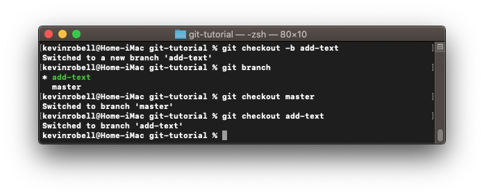
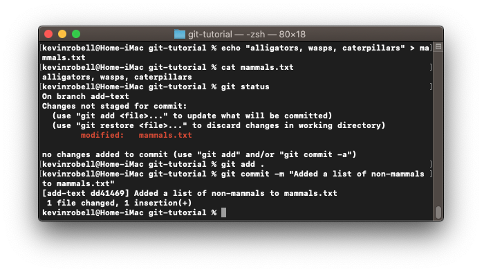
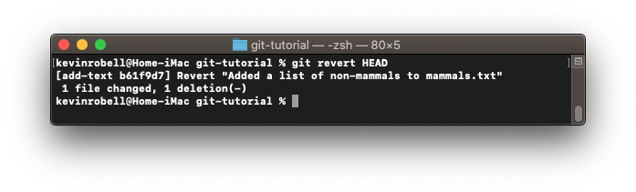
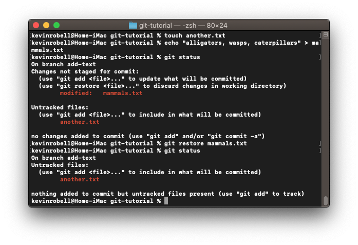
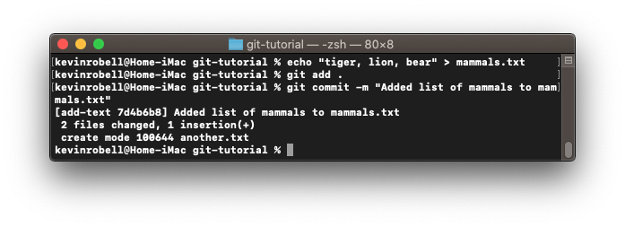
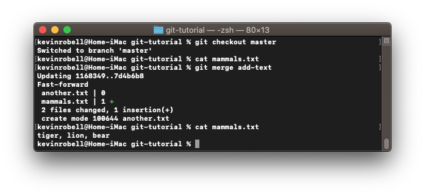
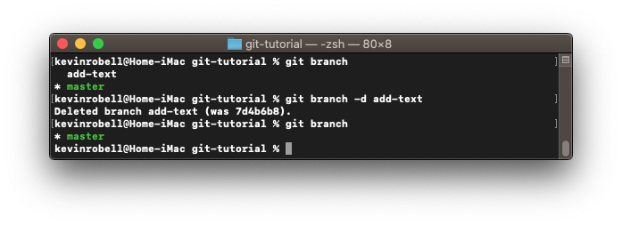

Branching allows you to make a copy of your project that you can change without interfering with the state of your original project. You are encouraged to make a new branch before making changes to a codebase.
In this case, we currently have an empty file called mammals.txt. Type git checkout -b <branch name>. This will create a new branch called add-text and checkout or move you to that new branch. You can check the current branch by typing git branch. Move to another branch by typing git checkout <branch name>.
 command." />
Now let’s add some text to mammals.txt in the add-text branch. Add “alligators, wasps, caterpillars” and make a commit.

Of course, those aren’t names of mammals. We can revert the branch to the previous commit by typing git revert HEAD. The default text editor will pop up to allow you to type the commit message. Continue with the default commit message. Revert actually makes a new commit which reverses the changes made in the previous commit instead of deleting the previous commit.

There is another more precise way to reverse changes at the file level instead of the commit level. In the add-text branch, create and add a file named another.txt. Now add “alligators, wasps, caterpillars” to the file mammals.txt one more time. If we reverted the commit like last time, the file another.txt would be lost. We don’t want that. Instead, we can revert the contents of mammals.txt to the previous commit by typing git restore <file path>. Once again we have removed the non-mammals from the mammals.txt file while the another.txt file remains intact.
 command." />
We’re back where we started. Let’s add “tiger, lion, bear” to mammals.txt and make a commit.

To add these changes to the main branch we move to that branch and type git merge <branch name>. That will merge changes into the checked out branch. In some cases, a merge conflict will appear and this will force you decide on which code to keep based upon the diff. Once you correct the merge conflict you will be able to merge. In this case, there are no conflicts so we can move on.
 command." />
You can see that the merge worked because the mammals.txt file was blank before the merge and has a list of mammals after the merge.
Since we have merged in the changes from the add-text branch into the main branch, we can delete the add-text branch by typing git branch -d <branch name>. Note: this command only works when you are NOT using the branch that is being deleted.
 command." />
Now that you know how to branch and merge we will move on to using git with remote servers.